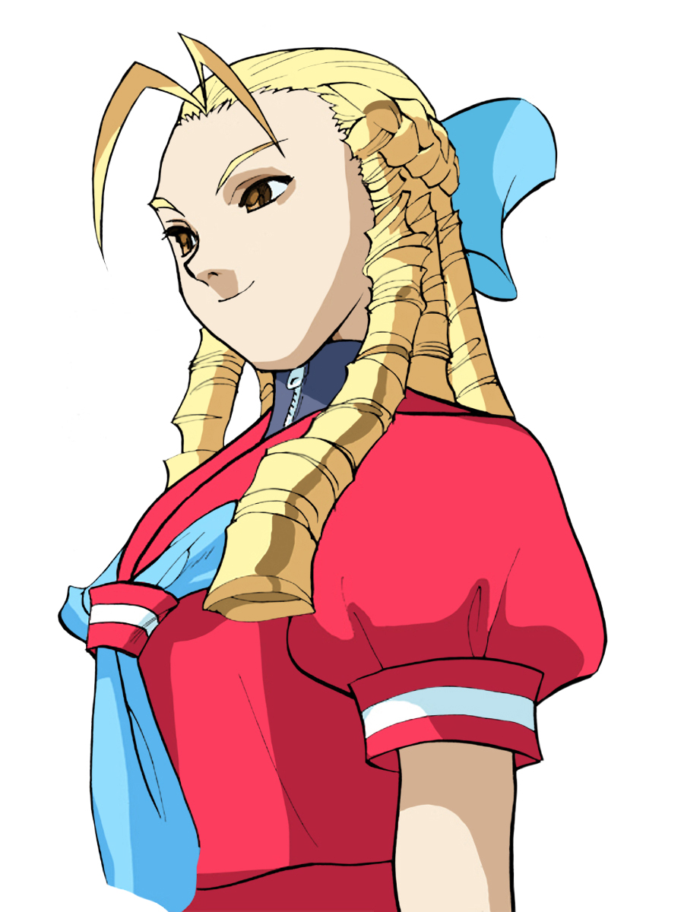

Karin's personality is basically that of the typical rich, overindulged, snobby girl. Before every fight, she laughs haughtily as if she considers her opponent inferior to her.
 However, despite her arrogant behavior, she is not without redeeming qualities; after fighting against R. Mika, she offered to become her sponsor, and after defeating Sakura she admitted that she won by chance, acknowledging her rival as the better fighter, also realizing was Ken had told her earlier, that winning is not as important as the challenge itself. Karin matures significantly in Street Fighter V, now being the standing leader of her family, and the Kanzuki Zaibatsu. However, she enjoys fights and while still being able to dish unflattering remarks, she has a renewed respect for people with skills and strength, however minimal they may be.
Karin Kanzuki considers herself a rival of Sakura, who defeated Karin when challenged. Karin is from a very rich Japanese family (the Kanzuki family), whose motto is "all you need is victory" and alternately "the worst we'll ever be is the best". (A bonus short in the Street Fighter III: Ryu Final manga takes this further with "Victorious, therefore Supreme! Supreme, she is Karin Kanzuki!"). The Kanzuki estate, according to Sakura Ganbaru!, stretches across 200 acres, but it is unclear how big the mansion is or how many rooms are in the mansion. The Kanzuki corporation is threatened by Shadaloo, which then makes demands of the dynasty. She used the family fortune while attempting to track down a roving Sakura, to challenge her again. Along the way, she encounters Blanka and defeats him in a friendly match, musing that "the world is so vast" for such a beast to exist. She also encounters R. Mika and battles her, and is so impressed by Mika's ability that she offers the wrestler her sponsorship. Karin eventually found and defeated Sakura, but realized the victory was a fluke, and that the fight itself is more important, not winning or losing (Ken Masters told her this previously). The two then became good friends after that. She lives by her motto more than the rest of her family, as she takes majority control of her father's company from under his nose in a hostile takeover (ironic since he was the one to drive that philosophy into her). It's unclear how close she is to her mother Nadeshiko, though. Despite being in only a small number of games, Karin is one of the most popular characters in the Street Fighter series.